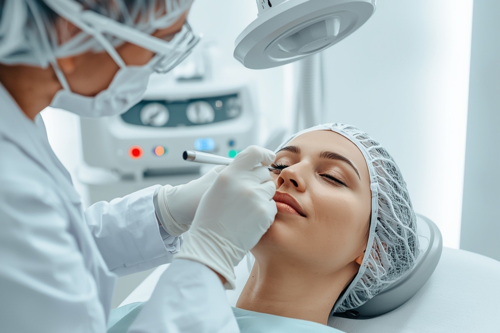
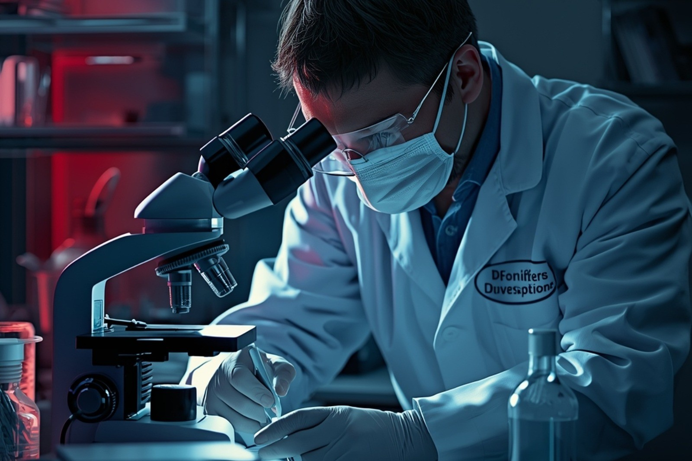

O curso de Biomedicina da Faculdade São Vicente forma profissionais preparados para atuar em diversas áreas da saúde, com foco em diagnóstico, pesquisa científica e inovação.
Durante a graduação, o aluno desenvolve conhecimentos em análises clínicas, microbiologia, genética e imunologia, com forte integração entre teoria e prática em laboratórios modernos.
Infraestrutura completa para aulas práticas desde o início da graduação.
Professores experientes e atuantes no mercado da saúde.
Formação alinhada com o mercado atual.
Análises Clínicas: atuação em exames e diagnósticos laboratoriais.

Estética: procedimentos estéticos com base científica.

Forense: análise de evidências biológicas em investigações.
Pesquisa Científica: desenvolvimento de estudos na área da saúde.